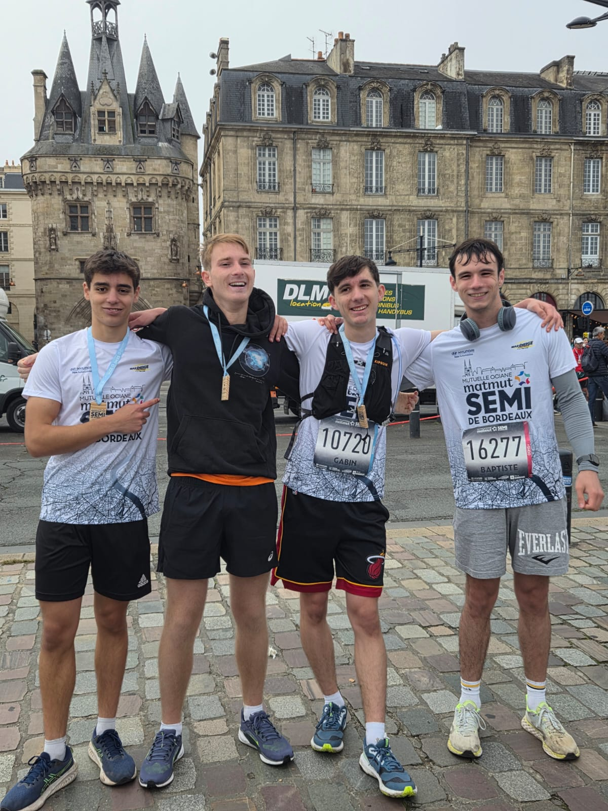

Premier défi : Le Semi-Marathon
C'est avec le semi-marathon de Bordeaux que j'ai commencé la course à pied. Ce défi m'a non seulement poussé à apprécier mes premiers kilomètres, et a surtout révélé en moi une réelle passion pour les sports d'endurance.
Même en étant sportif, courir 21 km demande une vraie préparation. J'ai donc suivi un entraînement régulier en alternant sorties longues et séances plus rapides, tout en prenant le temps de me renseigner sur les bonnes pratiques. C'est ainsi que j'ai réussi à boucler mon premier semi-marathon.
L'expérience du trail en nature
Peu après mes débuts en course à pied, j'ai découvert le trail et j'ai immédiatement accroché.
Cette discipline mélange course à pied et randonnée, que ce soit en forêt ou en montagne. Ce qui me plaît particulièrement, c'est l'état d'esprit. On court avant tout pour finir la course et profiter des paysages, loin de l'obsession du chrono que l'on retrouve souvent dans d'autres communautés.
S'entraîner sans dénivelé
N'ayant pas toujours la montagne à proximité, je dois m'entraîner à Bordeaux. Ce n'est pas idéal pour le trail, étant donné que la ville présente peu de dénivelé, mais cela ne m'empêche pas de continuer à me préparer pour mes prochaines courses, et notamment pour le Marathon de Bordeaux que je prévois de courir en novembre 2026.
Ma ligne de mire : L'Ultra-Trail
J'ai profité de mon stage au Japon pour faire du trail dans les montagnes. Contrairement à Bordeaux, habiter à Shinjuku m'a permis de rejoindre le départ des sentiers en à peine une heure de train, m'offrant ainsi un accès facile et direct au dénivelé.
Mon objectif ultime est de m'aligner sur des formats d'Ultra-Trail. Atteindre ces distances demande un entraînement exigeant et un mental solide, mais c'est aussi le moyen de se déconnecter le temps d'une course en vivant des expériences uniques au cœur de paysages grandioses.